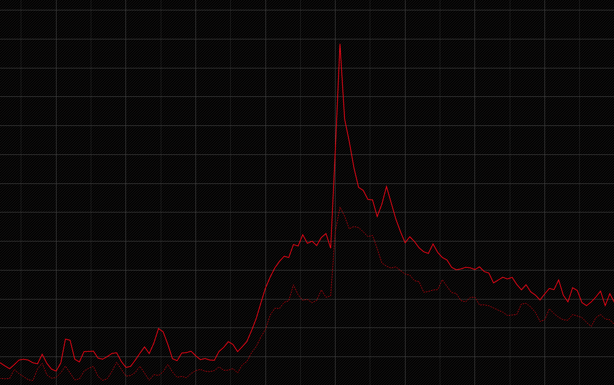

11:59
12:00
How to survive one of the biggest spikes in e‐commerce ...
... the story of the Gilt load testing platform
Andrew Duffy @amjjd
A long time ago...
... worked well, until ...
Make the site fast enough: 1000 servers, or ...
(and, lately)
Is it fast enough now?
+ custom tooling
Problems
- Expensive to scale
- GUI for writing simulations :(
- No adoption by developers
Scala DSL :)
.repeat(5) {
pauseExp(pause seconds)
.randomSwitch(
75 ->
feed(storesActiveSaleUrls)
.exec(http("stores-sale").get("${saleUrl}").headers(acceptHtml).check(status.is(200))),
25 ->
feed(homeActiveSaleUrls)
.exec(http("home-sale").get("${saleUrl}").headers(acceptHtml).check(status.is(200)))
)
}
Complex interactions in code
// simulate typing in the box by running successive autocomplete searches
.repeat((s: Session) => 4 min s.getTypedAttribute[String]("query").length, "i")(
exec((s: Session) => s.setAttribute("prefix", s.getTypedAttribute[String]("query") take s.getTypedAttribute[Int]("i")+1))
.exec(
http("autocomplete")
.get("/autocomplete")
.queryParam("q.query", "${prefix}")
.queryParam("q.store", "${store}")
.headers(acceptJson)
.check(status.is(200))
)
.pause(0 milliseconds, 30 milliseconds)
)
Process
- Domain knowledge & Splunk to model load
- Create an SBT subproject for your test
- Write & test
sbt releaseto create a jar, tag & publish- Jenkins job to test production from EC2 ...
Lessons
(again)
Modelling real load is hard
- 1 minute resolution (New Relic) is not enough
- Need to synchronize multiple load generators
- Modelled real load can break the site!
Developers are lazy ;)
- Load tests not kept up to date
- Failures are ignored
- Too much copypasta to create a new test

The future
The new new platform
- Load test in the service repo (SBT FTW!)
#!/bin/bashJenkins?
Load testing as part of a deployment
- Deployments create a new fleet in containers ...
- ... run tests, including load tests ...
- ... then switch traffic from the old fleet ...
- ... which is kept running, just in case.
The Smoking Gun Detector ©
- Compare data from Gatling, New Relic & more to previous runs to detect the cause of a failed test
- R, the Kolmogorov Smirnov test, ... ?